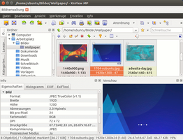
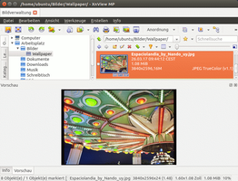
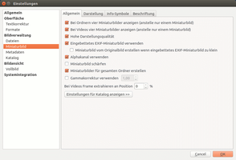

XnViewMP
Dieser Artikel wurde für die folgenden Ubuntu-Versionen getestet:
Ubuntu 16.04 Xenial Xerus
Ubuntu 14.04 Trusty Tahr
Zum Verständnis dieses Artikels sind folgende Seiten hilfreich:
XnViewMP  ist ein kostenloser Photo- und Grafikbetrachter mit Datenbank, der als Freeware genutzt werden kann. Mit der Software kann eine Bildersammlung verwaltet und bearbeitet werden. XnViewMP unterstützt ebenfalls die Konvertierung von Bildern. Das Programm kann mehr als 170 Grafikformate
ist ein kostenloser Photo- und Grafikbetrachter mit Datenbank, der als Freeware genutzt werden kann. Mit der Software kann eine Bildersammlung verwaltet und bearbeitet werden. XnViewMP unterstützt ebenfalls die Konvertierung von Bildern. Das Programm kann mehr als 170 Grafikformate  lesen und 50 schreiben. Es wird seit 2008 entwickelt. Der Entwickler klassifiziert es aktuell noch als Beta-Stadium.
lesen und 50 schreiben. Es wird seit 2008 entwickelt. Der Entwickler klassifiziert es aktuell noch als Beta-Stadium.
Es ist auf verschiedenen Plattformen (Linux, Mac OS X, Windows) lauffähig. Langfristig ist geplant, dass es die seit 2001 entwickelte reine Windows-Version XnView ablösen soll. Dieser Schritt wurde bei NConvert bereits vollzogen, über den Zwischenschritt XnConvertMP zum aktuellen XnConvert. Aufgrund des langen Bestehens der Windows-Version, die aktuell nur noch mit Sicherheitsaktualisierungen versorgt wird, gibt es eine große Fan-Gemeinde und ein gut moderiertes Forum. Die Programmoberfläche ist aktuell in 22 Sprachen übersetzt.
Eine der großen Stärken des Programms ist die hohe Affinität des Entwicklers zu den Benutzern des Programms. XnView und XnConvert sind weitere Programme des Entwicklers.
|  |
| XnView Multi Plattform |
|  |
| angepasstes individuelles Layout |
Voraussetzungen¶
Xnview setzt intern auf GStreamer-0.10, während ab Ubuntu 13.10 der Nachfolger GStreamer-1.0 vorinstalliert ist. Abhilfe schafft die Installation des folgenden Pakets [1]:
gstreamer0.10-plugins-base (ab Ubuntu 16.04 in universe)
 mit apturl
mit apturl
Paketliste zum Kopieren:
sudo apt-get install gstreamer0.10-plugins-base
sudo aptitude install gstreamer0.10-plugins-base
Installation¶
 XnViewMP ist nicht in den offiziellen Paketquellen enthalten. Daher muss man auf Fremdpakete des Entwicklers ausweichen.
XnViewMP ist nicht in den offiziellen Paketquellen enthalten. Daher muss man auf Fremdpakete des Entwicklers ausweichen.
Fremdpaket¶
Im Unterforum MP - General support  wird in der ersten Rubrik "Announcements" (Ankündigungen) über das Erscheinen neuer Programmversionen informiert. Über die erste Nachricht dort erreicht man den Download-Bereich. Dort lädt man das entsprechende .deb-Paket für die eigene Rechnerarchitektur (32-/64-Bit) (z.B. XnViewMP-linux-x64.deb) herunter und installiert es manuell [2].
wird in der ersten Rubrik "Announcements" (Ankündigungen) über das Erscheinen neuer Programmversionen informiert. Über die erste Nachricht dort erreicht man den Download-Bereich. Dort lädt man das entsprechende .deb-Paket für die eigene Rechnerarchitektur (32-/64-Bit) (z.B. XnViewMP-linux-x64.deb) herunter und installiert es manuell [2].
GetDeb stellt ebenfalls ein Fremdpaket in der aktuellen Version zur Verfügung.
Hinweis!
Fremdpakete können das System gefährden.
Bedienung¶
|  |
| Einstellungen |
Nach erfolgreicher Installation ist das Programm im Anwendungs-Menü unter "Grafik -> XnView Multi Platform" zu finden.
Beim ersten Start [3] können im Startup Wizard ein paar Grundeinstellungen (z.B. die Sprache, Speicherort der Datenbank, Speicherort der Programmeinstellungen) festgelegt werden. Diese kann man später ebenfalls noch in den Einstellungen unter "Werkzeuge -> Einstellungen -> Systemintegration" verändern. Als Vorschlag sind diese auf das Benutzerkonto ausgerichtet.
Die Programmoberfläche präsentiert sich aufgeräumt. Die wichtigsten Elemente sind durch Schaltflächen sofort zu erreichen.
Der Browser arbeitet mit Reitern (Tabs) und zeigt alle Bilder des gewählten Ordners übersichtlich als Miniaturbilder an. Wählt man eines aus, erhält man in der Voransicht detaillierte Informationen zu diesem. Bilder können Kategorien zugeordnet, mit Lesezeichen versehen (genauso wie Ordner auch) oder bei mitgelieferten GPS-Daten der geographischen Lage zugeordnet werden. So ist es z.B. möglich, sich im Infobereich des ausgewählten Bildes eine Karte des Aufnahmeortes anzusehen.
Um den kompletten Funktionsumfang des Programms zu nutzen, sollte man die im Internet vorhandenen Handbücher und Tutorials zu Rate ziehen.
Tastenkürzel¶
| Tastenkürzel | |
| Taste(n) | Funktion |
| F12 | Einstellungen |
| Strg + Q | Programm beenden |
Weitere bereits vorhandene Tastenkürzel sind im Menü über "Werkzeuge -> Einstellungen -> Oberfläche -> Tastenkürzel" einsehbar.
Tipps und Tricks¶
Mehrere Programminstanzen starten¶
Im Auslieferungszustand ist das Starten des Programms in mehreren Instanzen möglich. Möchte man dies unterbinden, erreicht man dies über die Einstellung "Werkzeuge -> Einstellungen -> Allgemein" und setzt die Option bei "Anwendung nur einmal starten". Alternativ klickt man auf das Zahnradsymbol in der Symbolleiste, um die Konfiguration zu erreichen.
Layout verändern¶
Da die Oberfläche in Qt programmiert ist, können die Fenster im Programm verschoben werden. Es empfiehlt sich das Auslieferungslayout vor den ersten Versuchen als "Layout-1" abzuspeichern, damit Ungeübte den Ursprungszustand wiederherstellen können. Die Menüauswahl dazu erreicht man über die Schaltfläche "Layout".
Problembehebung¶
Fehlerberichte¶
Fehlerberichte werden direkt im kostenlosen und moderierten Forum des Entwicklers behandelt. I.d.R werden Anfragen rasch beantwortet, auch vom Entwickler selber. Er reagiert auch auf Wünsche und Anregungen aufgeschlossen. Fehlerberichte werden bei Versionsaktualisierungen referenziert. Wenn man dies nicht möchte, sollte man es anfangs vermerken.
Links¶
Unterschied zwischen XnView und XnViewMP
- Änderungen und neue Eigenschaften im Gegensatz zur reinen WindowsversionMP Testing Bugreports
- Fehlerberichte
Artikelserie bei linuxundich.de
Tests und Beschreibungen von XnViewMPFixPicture.org
- Online-Variante von XnViewGrafik
 Programmübersicht
Programmübersicht
- Erstellt mit Inyoka
-
 2004 – 2017 ubuntuusers.de • Einige Rechte vorbehalten
2004 – 2017 ubuntuusers.de • Einige Rechte vorbehalten
Lizenz • Kontakt • Datenschutz • Impressum • Serverstatus -
Serverhousing gespendet von